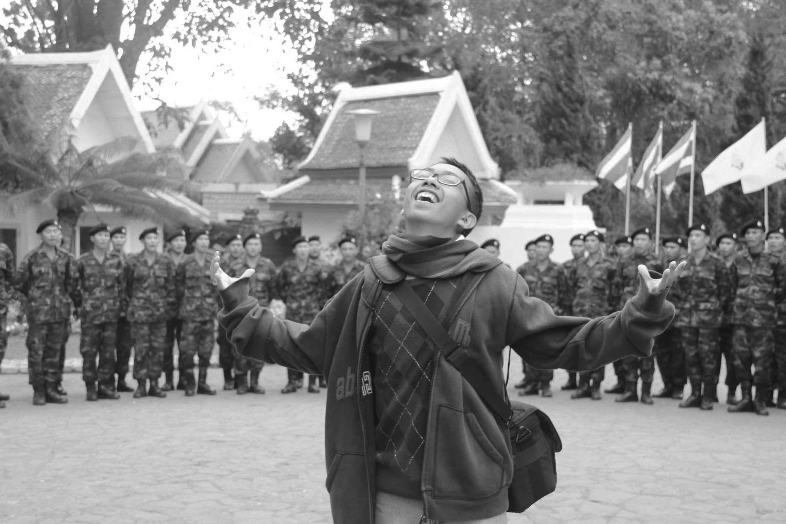
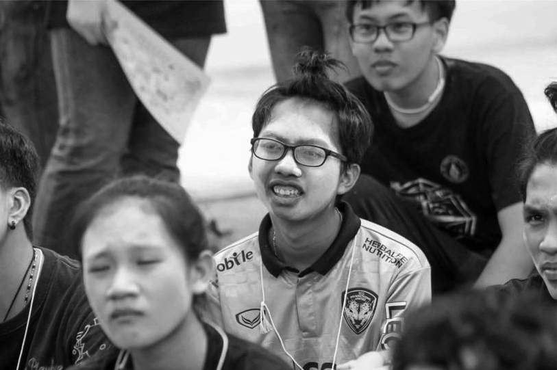
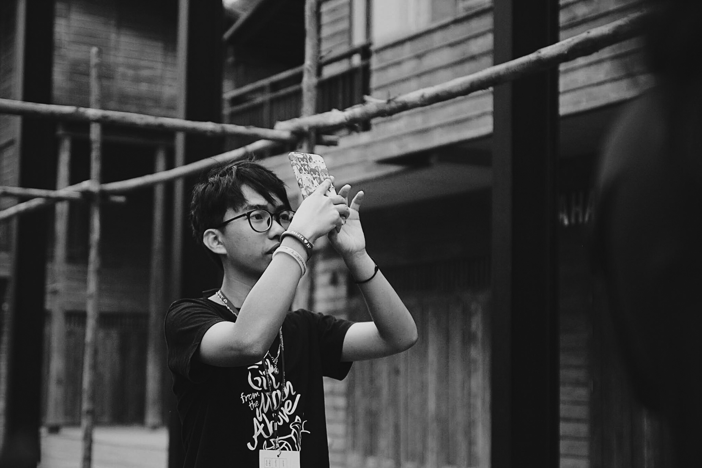

บางครั้งคณะในฝันก็ไม่เหมือนอย่างที่เราวาดฝัน
ช่วงเวลาแห่งความสนุก
ขณะที่กำลังฟังอาจารย์สอนในรั้วมหาวิทยาลัย....หากมีคนร่อนคำถามมาว่า ช่วงที่สนุกที่สุดของชีวิตคือช่วงไหน? ใช่แล้วครับ ช่วงมัธยมต้นนั่นแหละ มันคงเป็นคำตอบที่ตรงกับใจใครหลาย ๆ คน คำตอบที่ไม่ได้ต้องการเวลาคิดมากมาย ผมเห็นภาพตัวเองตอนอะดรีนาลีนกำลังสูบฉีดไปทั่วร่างกาย เห็นภาพสนามหญ้าตอนพักเที่ยง เด็กสิบกว่าคนเตะฟุตบอลกันตอนแดดเปรี้ยง ๆ ไม่มีกรรมการ ไม่มีแผนการเล่น ไม่มีกติกาใด ๆ ขอแค่รองเท้าคู่เก่งได้สัมผัสพื้นหญ้า ได้โห่ร้องพร้อม ๆ กับเพื่อนเมื่อลูกกลม ๆ ไหลผ่านเสาขวดน้ำไปก็เท่านั้น ชีวิตที่เต็มไปด้วยพลังงาน พอ ๆ กับเหงื่อบนเสื้อสีขาวที่ไม่สนว่าคาบบ่ายจะเรียนอะไร ขอแค่ได้เล่นไว้ก่อน บนใบหน้าเปื้อนยิ้มของเด็กชายบ่งบอกความสนุกของชีวิต ชีวิตที่ไม่ต้องคิดอะไรมากมาย ถึงเวลาเรียนก็เรียน ถึงเวลาเล่นก็เต็มที่ ไม่มีอะไรมากไปกว่านั้นจริง ๆ

ช่วงเวลาแห่งจินตนาการ
หลังช่วงเวลาความสนุก... เวลาผ่านไปไม่นาน ได้เวลาสอบเข้าโรงเรียนใหม่ ชุดยูนิฟอร์มเปลี่ยนแปลงไป เป็นสัญญาณว่าชีวิตนักเรียนมัธยมปลายได้เริ่มต้นขึ้นแล้ว ผมเองยังจำโมเมนต์ตอนไปดูผลสอบกับคุณแม่ โมเมนต์มือสั่นทั้ง ๆ ที่อายุเพิ่งจะสิบห้า ตอนเห็นรายชื่อตัวเองบนบอร์ด “ผู้ผ่านการคัดเลือกสอบเข้าม.4” ได้อยู่เลย ผมใช้เวลาปรับตัวไม่นานสำหรับเพื่อนใหม่ ชีวิตม.ปลายของผมแวดล้อมไปด้วยเพื่อนที่ชวนกันไปเรียนพิเศษหลังเลิกเรียน ส่วนใหญ่ก็เตรียมตัวสำหรับวิชาที่ต้องใช้ในการสอบเข้าคณะที่ตัวเองใฝ่ฝัน คำทักทายตอนเจอหน้ากันปรับเปลี่ยนเป็นคำถามว่าอยากเรียนคณะอะไร? ผมพยายามจินตนาการตัวเองในอาชีพต่าง ๆ แต่คำตอบของผมมันยังไม่เคยชัดเจนเลย รู้แค่ว่าต้องตั้งใจเรียนให้มาก ๆ เก็บเกรดให้เยอะ ๆ จะได้เลือกคณะไหนก็ได้ตอนที่รู้ว่าตัวเองอยากเรียนอะไร เห้อ! อ่านมาถึงตรงนี้คุณก็คงรู้ว่ามันไม่ได้ง่ายเลย บางวิชาเรียนในห้องก็ไม่ทัน ทำการบ้านก็ไม่เป็น แต่ก็พยายามเกาะกลุ่มกับเพื่อน ๆ กัดฟันจนผ่านมาได้แบบสะบักสะบอม
ในที่สุดความพยายามก็เห็นผล เกรดสะสมดีพอจะยื่นโควตาหลาย ๆ คณะที่น่าสนใจได้ หนึ่งในนั้นคือคณะไอซีที มหิดล ผมปักหมุดคณะนี้เป็นคณะในฝันของผมตั้งแต่วันนั้น โดยไม่รู้ด้วยซ้ำว่าคณะนี้เค้าเรียนอะไรกัน ชีวิตช่วงนั้นรู้สึกผ่อนคลายขึ้นมาก เริ่มมีความคิดว่าอยากทำกิจกรรมต่าง ๆ ในโรงเรียน อยากเติมเต็มช่วงเวลาม.ปลายที่หายไป เลยตัดสินใจลงสมัครกรรมการนักเรียน ทำกิจกรรมเชียร์และแปรอักษร เป็นสภานักเรียน และอีกมากมายที่คุณพอจะนึกออก ทำให้ชีวิตในห้องเรียนถูกทดแทนไปด้วยกิจกรรมที่ทำจนหมด ด้วยความคิดที่ว่า เดี๋ยวค่อยไปเริ่มต้นนับหนึ่งใหม่ในรั้วมหาวิทยาลัยก็คงจะทัน
ช่วงเวลาแห่งมรสุม
“น้องชื่ออะไร น้องชื่ออะไร” เสียงเพลงจากไมโครโฟนของพิธีกรดังวนไปวนมาอยู่หลายครั้งสอดประสานกับเสียงตีกลองจากพี่ ๆ ในคณะที่ยืนต้อนรับและพยายามทำความรู้จักกับเหล่าเฟรชชี่ปีหนึ่งอย่างเป็นมิตร เช่นเคย สำหรับผม การมีเพื่อนในรั้วมหาวิทยาลัยก็ไม่ได้ยากอย่างที่ใครหลายคนกังวล แต่สื่งที่ยากกลับเป็นวิชาเรียนในคณะ ใช่แล้วครับ คุณคิดถูกอีกครั้ง ความคิดจะเริ่มนับหนึ่งในรั้วมหาลัยนั้นน่าผิดหวังมาก อาจเพราะผมไม่ได้ศึกษาหลักสูตรล่วงหน้ามาเลย รู้ตัวอีกที ตัวผมอาจจะต้องเริ่มนับด้วยเลขติดลบด้วยซ้ำ ผมอยากเรียนโฟโต้ช้อป งานปั้นโมเดล แต่สิ่งที่ผมได้เรียนไม่ใกล้เคียงแบบนั้นเลย ต่อมความรู้สึกเริ่มยกมือประท้วง ชี้แจงว่าไม่เหมือนอย่างที่วาดฝันเอาไว้ซะเลย ได้แต่สะกดจิตตัวเองไว้ว่าจะต้องขยันขึ้นกว่าเดิม ต้องตั้งใจเรียนให้มากขึ้น และด้วยความช่วยเหลือจากเพื่อน ๆ พี่รหัสที่น่ารัก ทำให้ผ่านชีวิตเฟรชชี่ไปได้อย่างทุลักทุเล

ก้าวเข้าสู่ปีที่สองของการเรียนในคณะ ผมเริ่มเรียนในห้องไม่ค่อยเข้าใจนัก บวกกับไม่ค่อยตั้งใจเรียน หมด passion ไปกับเนื้อหาบนกระดาน พอถึงคราวต้องทำโปรเจคเดี่ยว ก็ตัวใครตัวมัน เพื่อน ๆ ก็ทำกันไม่ค่อยจะทัน ไม่มีเวลาจะมาช่วยเหลือใคร ผมเลือกทำเท่าที่ผมทำได้ ความตั้งใจเริ่มลดน้อยถอยลง สวนทางกับเนื้อหาในห้องเรียนที่นับวันยิ่งทวีคูณความยากขึ้นทุกคลาส ความไม่เข้าใจเริ่มก่อตัวใหญ่ขึ้นเรื่อย ๆ จนถึงวันที่ต้องจับปากกาเลือกความไม่เข้าใจลงในกระดาษคำตอบในห้องสอบ ข้อสอบจำนวนมากวางอยู่บนโต๊ะสวนทางกับความมั่นใจที่แทบจะไม่มีหลงเหลือ ผมเดาตามเซ้นต์ของตัวเองและตามคาดครับ เซ้นต์ไม่ได้มีไว้ใช้ในห้องสอบจริง ๆ คะแนนสอบออกมาไม่สู้ดีนัก หนักเข้าบางวิชาถึงขนาดติดเอฟก็มีให้เห็น อาจารย์ที่ปรึกษาเริ่มเรียกไปคุยถี่ขึ้นเรื่อย ๆ เกรดเฉลี่ยสะสมก็น่าเป็นห่วงจะติดวิทยาทัณฑ์ ผมเริ่มรู้สึกอยากจะซิ่วเพื่อไปเรียนคณะอื่น ๆ ที่เหมาะกับตัวเองมากกว่านี้ โชคดีที่คุณพ่อกับคุณแม่ให้อิสระในการตัดสินใจ คอยให้กำลังใจและหนุนหลังเสมอ
ก่อนตัดสินใจเลือกทางเดินใหม่ ผมมีโอกาสได้คุยกับพี่รหัสที่ทั้งสายมีแค่เราสองคน เราสองคนสนิทกันมาก ๆ และเหงามากเช่นกัน (ฮ่า ฮ่า) เธอชื่อพี่หมูยอ ผมใช้เวลาหลายชั่วโมงเพื่อระบายความรู้สึกให้ผู้รับสาร สีหน้าเธอนิ่งเฉยพร้อมปฏิเสธเสียงแข็ง เธอบอกว่าผมเรียนคณะนี้ได้ ยังมีอีกหลายอย่างที่รอผมอยู่ในคณะนี้และเธอเชื่อว่าผมสามารถทำมันออกมาได้ดี ผมทำหน้าฉงน เธอทำหน้าจริงจังอีกครั้ง พลางพูดว่า "แทนคงเคยได้ยินว่า เราควรทำในสื่งที่เราชอบ สิ่งที่เราทำต้องเต็มไปด้วย Passion แล้วเราจะทำได้ดี คำพูดเหล่านี้มันถูกแค่ครึ่งเดียว ชีวิตจริง เราจำเป็นต้องลงมือทำ ต้องเรียนรู้สิ่งที่เราไม่ชอบอยู่หลายครั้งและเราต้องผ่านมันไปให้ได้" ผมได้แต่นั่งทำตาปริบ ๆ พยักหน้าตามบริบทที่เห็นภาพชัดเจน เธอได้ทิ้งท้ายและเพิ่มเติมว่า เธอเองเคยซิ่วมาเหมือนกัน นั่นคงเป็นสาเหตุที่เธอเข้าใจสถานการณ์ของผมได้อย่างดีเยี่ยม
ช่วงเวลาแห่งการตัดสินใจ
ผมเลือกที่จะเชื่อเธอ และเชื่อตัวเองอีกครั้ง ผมใส่เกียร์เดินหน้าแบบเด็กที่ตั้งใจเรียน ตั้งใจทำงานทุกวิชาที่ผมชอบอย่างดีและไม่ลืมที่จะเปิดใจทำความรู้จักกับวิชาที่เราไม่ชอบควบคู่กันไป ไม่นานเกินรอ ผมพาตัวเองมาถึงตอนเลือกสาขาในตอนปีสามจนได้ ผมได้เจอในสิ่งที่ผมชอบและทำได้ดี พอ ๆ กับสิ่งที่ไม่ชอบ และดูเหมือนมันจะมีมากกว่าสิ่งที่ชอบซะอีก แต่นั่นแหละครับท่านผู้อ่าน เมื่อเรือมีหางเสือที่ดี มันก็จะพาเราแล่นไปถึงเป้าหมายที่เราคาดหวังไว้ได้ เรือของผมก็เช่นกัน มันแล่นมาไกลถึงสี่ปีแล้ว และมันอาจถึงเวลาที่จะต้องเปลี่ยนเรือ เปลี่ยนเส้นทางเดินเรือ เปลี่ยนมุดหมายบนแผนที่ใหม่ หวังว่าเรือลำนี้จะแล่นผ่านมรสุมชีวิตรูปแบบใหม่ในท้องทะเลได้เหมือนทุกครั้งนะ

บทเรียนราคาแพงบทนี้ไม่เพียงแต่บอกเล่าความไม่เอาใจใส่หลักสูตรที่จะเลือกเรียนชีวิตในรั้วมหาวิทยาลัย แต่ยังแสดงความจริงในชีวิตอีกแง่มุมหนึ่ง บางครั้งสิ่งที่อยู่ในความฝัน มันก็เต็มไปด้วยความสวยงาม แต่เมื่อเราได้เจอมันอยู่ตรงหน้า ชีวิตจริงอาจรายล้อมไปด้วยขวากหนาม หลายอย่างอาจไม่เหมือนที่เราวาดฝันไว้แต่สุดท้ายเราจะต้องผ่านมันไปให้ได้ในซักวัน
ราตรีสวัสดิ์